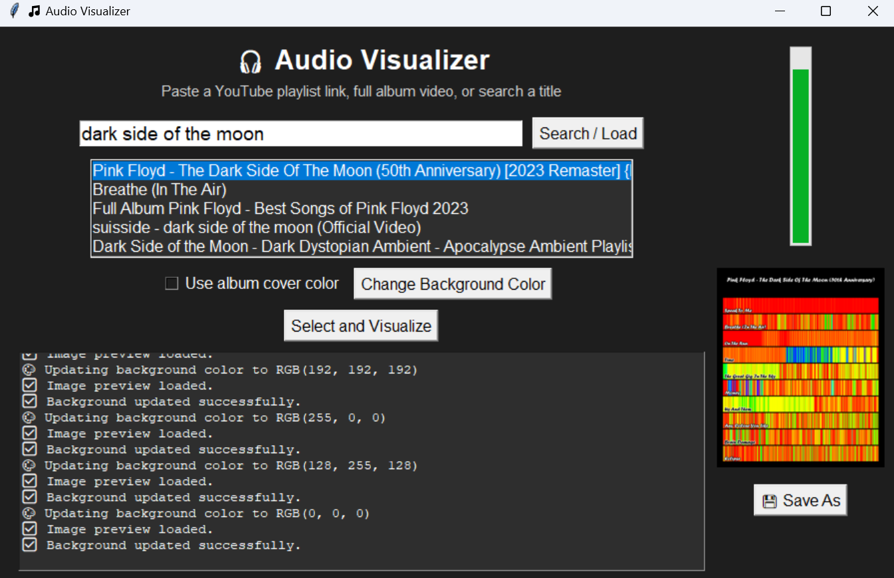

AlbumViz transforms songs into vibrant gradients, turning sound into color-driven art.
Every track has its own unique fingerprint. Browse the gallery to see more.
AlbumViz runs entirely on your own computer — your music never leaves your device. If you request a print, only the generated image (not the song itself) is shared. The site is supported by ads, but your music remains private and secure.
Music is more than just sound—it's an experience that evokes powerful emotions, memories, and even visual imagery. AlbumViz bridges the gap between hearing and seeing by translating the unique frequency patterns of songs into vibrant color gradients. This process not only creates beautiful visual art but also provides a new way to understand and appreciate the structure of music.
AlbumViz uses advanced audio analysis techniques to break down your music into its core components. The process starts by dividing the audio into 1,000 segments, regardless of the song's length. For each segment, the dominant frequency is detected using digital signal processing algorithms. This frequency is then mapped to a specific wavelength of visible light using a logarithmic scale, ensuring that the full range of human hearing is represented proportionally in the color spectrum.
Here’s the formula used:
$$\lambda = 700 - 300 \times \frac{\log_{10}(f) - \log_{10}(20)}{\log_{10}(20000) - \log_{10}(20)}$$
\(\lambda\): Wavelength in nanometers (400–700 nm)f: Frequency in Hz (20–20,000 Hz)